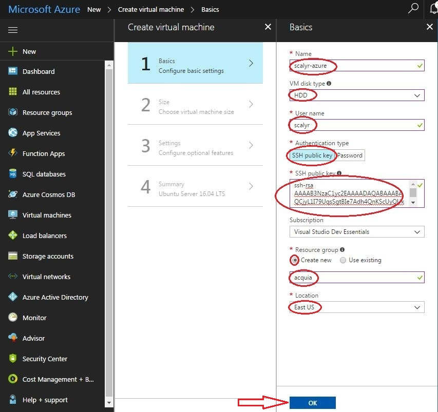
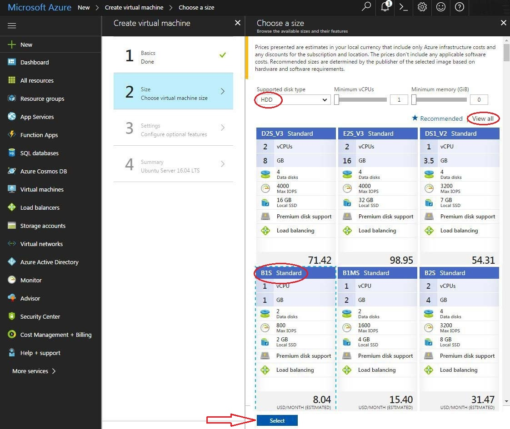
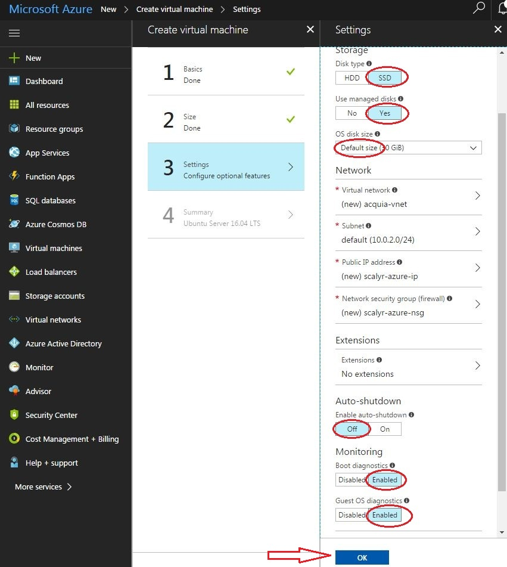
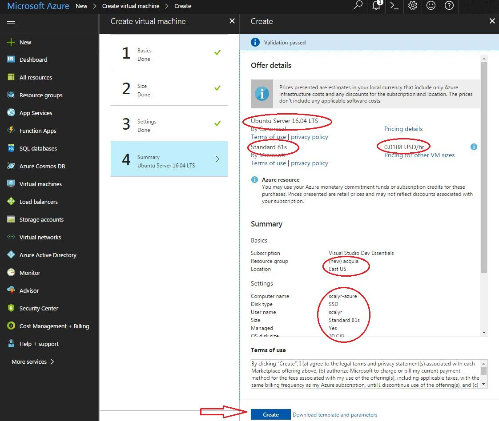

Creating an Azure Linux Virtual Machine to Support Acquia Log Monitoring and Aggregation Using Scalyr (Back to Main Page)
AgentSpring, LLC | January 22, 2018 | projectsfoo@agentspring.com
The following is intended to provide general guidance on creating a Linux Virtual Machine for use with your Scalyr-Acquia project.
- You will need an SSH client and generate an RSA private/public key pair so you can login to your Azure VM
- Windows: Git-Bash, PuTTY, Cygwin
- Linux, Mac OS/X, Azure Cloud Shell (See Steps)
Azure Cloud Shell is initiated directly from the Azure Web portal. It is a Bash or PowerShell command shell that runs within the portal from which all necessary tasks can be performed (e.g., generate ssh keys and SSH into the created Linux VM). If this option is used, login to Azure first.
- Login to Existing Azure Account or Create Free Option 1 (Visual Studio Dev Essentials Account) or Create Free Option 2
- Create Linux VM via Portal (see below for recommended settings)
- From your SSH client, SSH into the created VM (e.g., ssh <username>@<vm_public_ip_address>)
The user name is the name entered on the Basics settings page when configuring the VM. The Public IP address is obtained from the VM overview page
Recommended Settings for VM
Basic Settings
Name: scalyr-azure (choose any Computer/Host name)
VM disk type: HDD (need in order to select low cost VM Size)
User name: scalyr (VM login name. A 'scalyr' Linux group will automatically be created)
SSH Public Key ssh-rsa....(Paste public key from Step 1)
Resource group: acquia
Location: East US Choose same region as Acquia server (Typically East US/East US 2) (you can determine location from Acquia console)

Virtual Machine Size
Click 'View All'
If using a free Dev-Essentials Subscription, choose plan that's less than $25/month: (can scale up later if needed)
B1s 1 vCPU, 1 G mem, 30GiB disk (shows 2 G SSD)
Cost $8/month. Plenty left to: Scale up VM if needed, add Cloud Shell and other uses
Other options under $25/mo: B1MS, A0 Standard, A0 Basic, A1 Basic

Optional Feature Settings:
Change Disk type back to SSD - had to select HDD at beginning to have low cost Size selections available.
Use managed disks: Yes
Enable auto-shutdown: Yes
Boot diagnostics: Disabled
Guest OS diagnostics: Disabled
* Enabling Diagnostics requires creating a storage device (billable resource). For this project it's really not necessary.

Summary
Size B1S: 1 vCPU, 1G mem, 30GiB HHD disk
Cost 0.0108 USD/hr, 0.26 USD/day, $8 USD/mo
